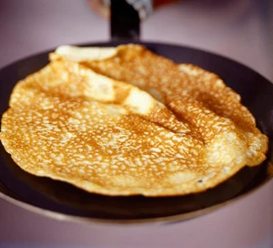

English Pancakes
>
Description
An easy pancake batter recipe with tips on how to make the best pancakes every time with sweet or savoury toppings
Serves 8
Ingredients
- 100g plain flour
- 2 eggs
- 300ml semi-skimmed milk
- 1 tbsp sunflower oil or vegetable, plus extra for frying
- pinch of salt
Steps
- Put 100g plain flour and a pinch of salt into a large mixing bowl.
- Make a well in the centre and crack 2 eggs into the middle.
- Pour in about 50ml from the 300ml of semi-skimmed milk and 1 tbsp sunflower oil then start whisking from the centre, gradually drawing the flour into the eggs, milk and oil. Once all the flour is incorporated, beat until you have a smooth, thick paste. Add a little more milk if it is too stiff to beat.
- Add a good splash of milk and whisk to loosen the thick batter. While still whisking, pour in a steady stream of the remaining milk. Continue pouring and whisking until you have a batter that is the consistency of slightly thick single cream.
- Heat the pan over a moderate heat, then wipe it with oiled kitchen paper.
- Ladle some batter into the pan, tilting the pan to move the mixture around for a thin and even layer. Quickly pour any excess batter into the mixing bowl, return the pan to the heat.
- Leave to cook, undisturbed, for about 30 secs. If the pan is the right temperature, the pancake should turn golden underneath after about 30 secs and will be ready to turn.
- Hold the pan handle, ease a palette knife under the pancake, then quickly lift and flip it over. Make sure the pancake is lying flat against the base of the pan with no folds, then cook for another 30 secs before turning out onto a warm plate.
- Continue with the rest of the batter, serving them as you cook or stack onto a plate. You can freeze the pancakes for 1 month, wrapped in cling film or make them up to a day ahead.
Home